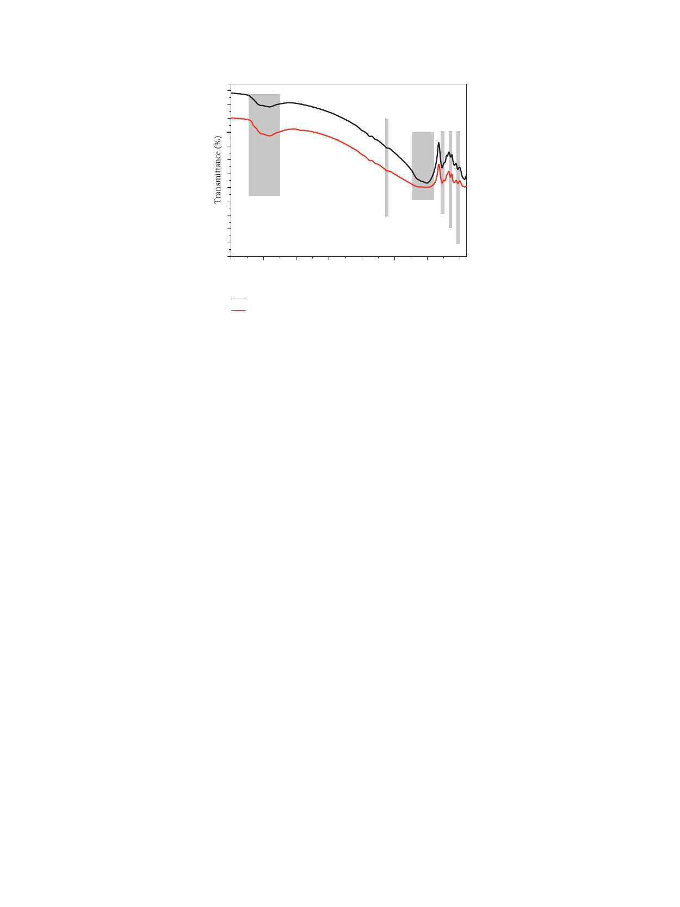

International Journal of Microbiology
5
O–H (S)
3353–3636 cm–1
(S): stretching
(B): bending
H–O–H (B)
1632 cm–1
Si–O (S)
1011 cm–1Si–O
762 cm–1
Si–O
649 cm–1
Si–O (B)
529 cm–1
4000 3500 3000 2500 2000 1500 1000 500
Wavenumber (cm–1)
a
b
Figure 2: XRD analysis and FTIR analysis of ground Rosa Porrino (a) and Gris Pinhel (b).
with the ones of granite Rosa Porrino. In addition, Teixeira
et al. [8] also showed that the granite surface is hydrophilic
which is also in agreement with the result obtained for
granite Gris Pinhel. It is important to note that both studies
[8, 11] did not specify the type of granite evaluated. In
addition to that, P. aeruginosa presents the hydrophilic
surface with a higher value of electron donor and a lower
electron acceptor (Table 2). is hydrophilic character could
be explained by the fact that P. aeruginosa possesses the B-
band LPS as reported by Makin and Beveridge [30]. Our
results are in agreement with reports of other authors [31],
which also found that P. aeruginosa is hydrophilic. On the
other hand, Li et al. [32] and Vanhaecke et al. [33], indicated
that P. aeruginosa has a hydrophobic character. e con-
tradiction with our findings might be due to the difference in
experimental conditions such as the temperature of stain
culture which was 26°C for Li et al. [32], while it was 37°C in
our study. Vanhaecke et al. [33] have determined the hy-
drophobicity of fifteen isolates of P. aeruginosa using four
methods including bacterial adhesion to hydrocarbon
(BATH) and CAM. eir results showed that three isolates
of P. aeruginosa appeared hydrophilic with the BATH test
and the majority of the isolates showed a hydrophobic
character by using CAM.
3.4. Biofilm Formation of P. aeruginosa on Two Kinds of
Granite. e ability of P. aeruginosa to adhere to granite
Rosa Porrino and to granite Gris Pinhel with subsequent
biofilm formation was investigated. e number of biofilm
cells was determined through the PCM method showing that
P. aeruginosa cells adhere more to Rosa Porrino than Gris
Pinhel with a higher viable cell in the first substratum
(Figure 6(c) (black bar)). e coverage area was also
quantified using the EP analysis in which a significant
difference (P < 0.05) between two granites was announced,
where it was more important on the surface of the Rosa than
the one observed on the Gris (Figure 6(c) (red bar)).
Additionally, the surface coverage can be easily observed
through the fluorescent green (Figures 6(a) and 6(b)),
showing that P. aeruginosa biofilm colonized a large extent
on the granite Rosa where just some bacterial cells are
visible since they are embedded in EPS matrix that does not
allow their clear visualization especially in the case of
granite Gris Pinhel. is difference could be explained by
the high number of P. aeruginosa cells that initially adhered
to Rosa (5.32 ± 0.35 Log10 CFU/cm2) after three hours of
attachment step, while the low number was remarked on
the Gris Pinhel (4.79 ± 0.58 Log10 CFU/cm2). Furthermore,
the physicochemical properties of the surfaces, as well as
the roughness, could also have an effect on biofilm for-
mation. P. aeruginosa possesses a strong electron donor and
the Rosa Porrino surface has the lower electron donor and
the moderate electron acceptor whereas Gris Pinhel surface
has a high electron donor and a low electron acceptor. is
indicates that the attraction between P. aeruginosa and
Rosa Porrino could be more important than the one be-
tween P. aeruginosa and Gris Pinhel. On the other hand, the
hydrophilic/hydrophobic character of the bacterium and
one of two granites might not explain the existence dif-
ference in numbers of adhering bacteria to these supports;
the bacterium has a hydrophilic surface and it adhered
more to granite Rosa Porrino which is hydrophobic than
granite Gris Pinhel which is hydrophilic. Oliveira et al.
[31, 34] reported that, in an aqueous medium, adhesion is
favored between hydrophobic surfaces, which can enter
into closer contact by squeezing the water layer between
them. Furthermore, roughness, topography, and surface
chemistry can affect bacterial adhesion [13, 35] and con-
sequently biofilm formation. Bohinc et al. [35] reported
that the number of adhering bacteria increases with the
increasing of the surface roughness, which is in disagree-
ment with our results; granite Gris Pinhel has a higher
roughness and a fewer number of bacteria adhering to it
compared to granite Rosa Porrino with the lowest
roughness. By contrast, Li et al. [32] and Flint et al. [36]